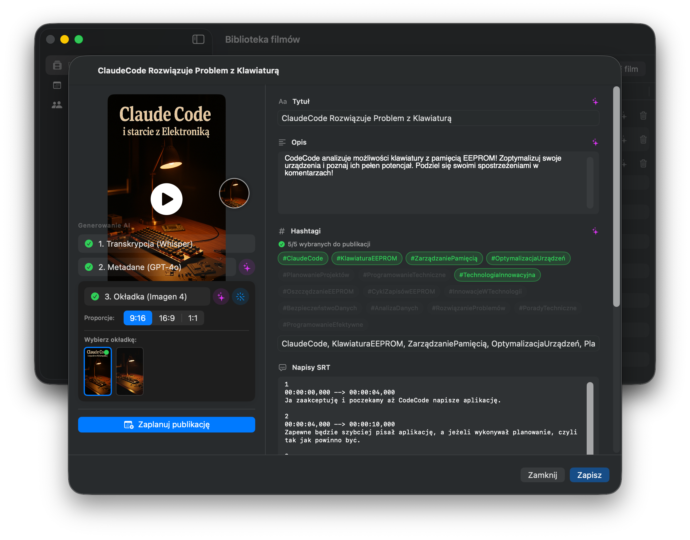
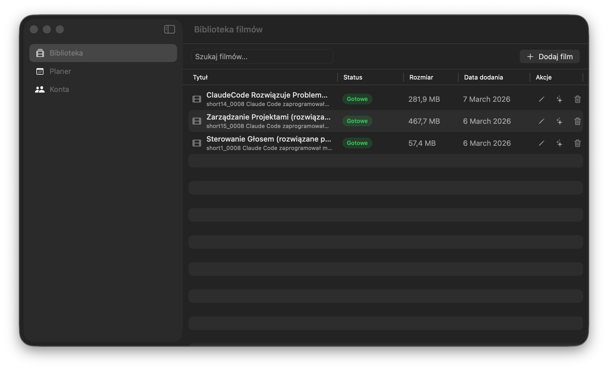
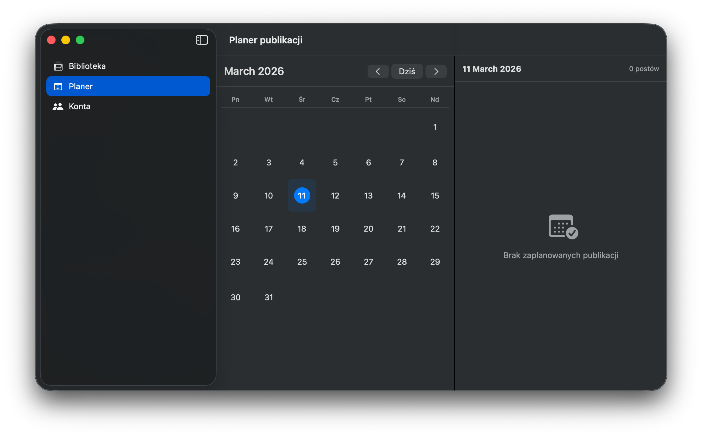
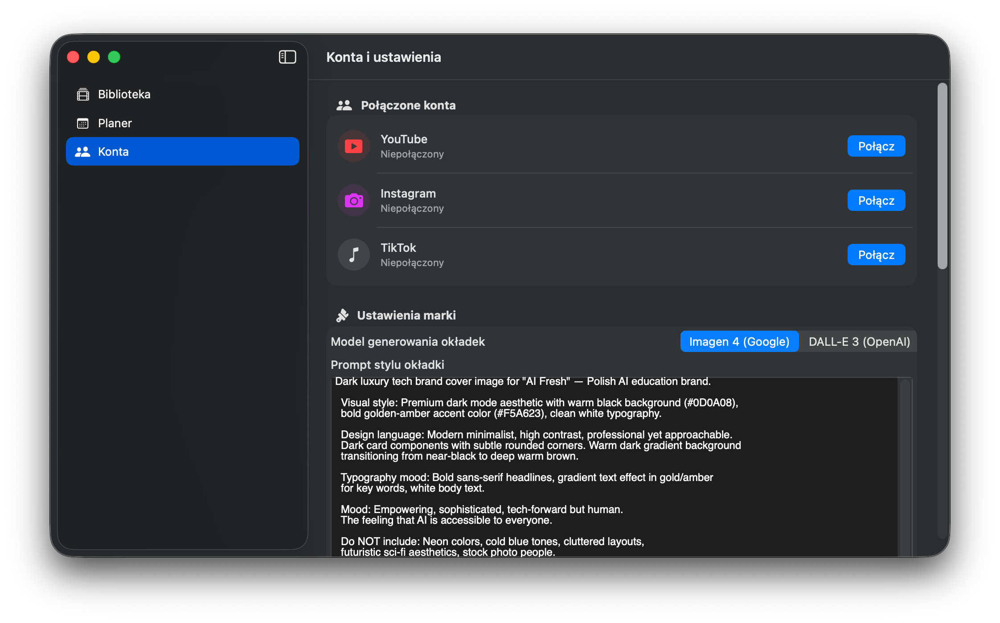

Native macOS app that auto-generates titles, descriptions, hashtags and thumbnails — then publishes to YouTube, Instagram, and TikTok.


Biblioteka filmów

Planer publikacji

Konta i ustawienia marki
Every feature visible in the app — nothing invented.
Table view with Tytuł, Status, Rozmiar, Data dodania. Drag & drop upload via "+ Dodaj film". Status: Gotowe, processing. Per-row action buttons: edit, generate all, delete.
OpenAI Whisper converts the video audio to SRT captions. Step 1 in the AI pipeline. Shown with a green checkmark when complete.
Generates Tytuł and Opis from the transcript. Hashtags with multi-select — choose which to publish. Step 2 in the AI pipeline.
Generates a video thumbnail. Selectable provider: Imagen 4 (Google) or DALL-E 3 (OpenAI). Aspect ratio: 9:16, 16:9, or 1:1. Step 3 in the AI pipeline.
Calendar view (month) with navigation, "Dziś" button. Right panel shows posts for selected date. "Zaplanuj publikację" button in the video detail sheet.
YouTube, Instagram, and TikTok. Each shows connection status and a "Połącz" button for OAuth. All three currently shown as "Niepołączony".
Inline in the Konta view. Thumbnail provider toggle (Imagen 4 / DALL-E 3). "Prompt stylu okładki" — long-form text field for visual style instructions passed to the image model.
Full SRT transcript visible and editable in the video detail sheet. Used as context for all AI generation steps.